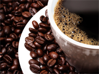

25-60-60")
Кофе Капучино
Классический итальянский напиток готовится по следующему рецепту: в керамическую чашку из кофемашины наливается одна порция эспрессо, после чего в чашку вливается подогретое и вспененное паром молоко. Иногда при вливании молока в эспрессо бариста особыми движениями создают на поверхности напитка рисунок — такая техника называется латте-арт. Качество эспрессо, температура молока, его консистенция и пропорции очень важны для получения хорошего капучино. Основа напитка закладывается в пропорциональном соотношении молока и эспрессо — пять к одному. Также текстура вспененного молока должна быть мелкодисперсной и походить на стеклянную поверхность, а его температура в питчере должна быть в пределах 60—65 °C. При достижении данной температуры в молоке происходит расщепление лактозы на глюкозу и галактозу, что делает его сладким.


Традиционно капучино подаётся в предварительно прогретой керамической чашке, объёмом не более 210 мл. В Италии капучино подаётся в особой чашке — тацца, — по форме напоминающей миску с ручкой. Тацца всегда изготовлена из толстостенной керамики. Как и в случае с эспрессо, чашка для капучино должна быть предварительно прогрета, поэтому в кофейнях эти чашки хранятся на кофемашинах, подогреваемые теплом от бойлеров. В Италии капучино обычно пьют за завтраком вместе с булочкой.
Капучино – это смесь молока и эспрессо. Если варьировать с их пропорциями, получаются уже разновидности этого напитка. Так выделяют макиато, где в чашку с эспрессо добавляют совсем немного молочной пены, или латте, где главную роль играет именно молоко, а не кофе. Отличие этих напитков будет состоять не только во вкусе, но и подаче, а также степени тонизирующего эффекта.